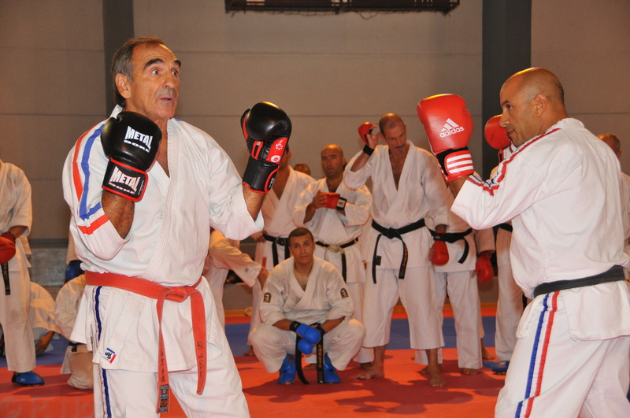
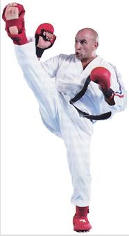
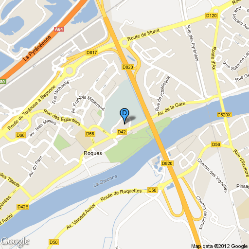

Bienvenu sur le site du club de karaté contact de Roques sur Garonne.Félicitations à Amar, notre entraineur, qui a passé avec succès son 5e Dan en Karaté Contact au mois de mai 2012 !
-
Accueil
-
Evènements
Evènements
Forum des associations 2012 

10-10-2012 Démonstration Karaté-Contact lors du forum des associations de Ramonville le 8 septembre 2012  Ajouter un commentaire
Ajouter un commentaireStage au Shaolin Club de Toulouse
16-08-2012 Dominique Valera avec Lilian Froidure Professeur (fondateur) au Club Shaolin de Balma-Toulouse, et Amar lors du stage de printemps le 23 Avril 2012 Quand deux légendes se rencontrent
15-08-2012 Notre ami Dominique Valéra avec Jean-Paul Belmondo et Rachid Ferrache (à gauche sur la photo) en ce début du mois d'août 2012
Le mot d'Elfie
02-07-2012  L'un des piliers de notre club, Elfie, s'en va vivre de nouvelles aventures en Afrique.
L'un des piliers de notre club, Elfie, s'en va vivre de nouvelles aventures en Afrique.
On ne la présente plus, elle a symbolisé pendant des années le dynamisme et la bonne humeur de notre club de karaté.
Voici son mot d'au revoir - et non d'adieu - à quelques jours du grand départ : le message (PDF, 2,8 Mo).
Repas de fin de saison 2012
09-06-2012 Le club fête la fin de saison avec son traditionnel repas de fin de saison à Roques sur Garonne.
RDV : Dimanche 24 juin 2012 à la Petite salle de rugby de Roques sur Garonne, avenue de la gare
<< Début < Précédente 1 2 Suivante > Fin >> Résultats 1 - 9 sur 11 -
Le club
Le club
Félicitations à Amar, notre entraineur, qui a passé avec succès son 5e Dan en Karaté Contact au mois de mai 2012 !
Présentation
Le club de karaté de Ramonville, au sud de Toulouse, est affilié à la fédération française de karaté et disciplines associées (FFKDA ) depuis sa création en 1992.
Il y a une section enfants de 5 à 13 ans et une section adultes à partir de 14 ans. Les jeunes femmes sont également bien représentées.
Le club propose différents styles de karaté :- Karaté contact
- Self défense (Street Contact)
Compétitions
Chaque année, nos membres les plus valeureux obtiennent des résultats significatifs dans les compétions de Haute Garonne et de Midi-Pyrénées. En 2005, 2 combattants se sont qualifiés pour les championnats de France dans leur catégorie. En Mai 2009, le club de Ramonville s'est classé deuxième de la compétion de la Vallée d'AX grâce à la fougue et à l'esprit d'équipe de nos jeunes karatékas.
Notre club mène une politique active de rencontres avec des intervenants de tous horizons (karate-jutsu,, couteau, sambo, boxe thaï) des rencontres-échanges avec d'autres clubs d'arts martiaux de Ramonville (judo, ju-jitsu).
Notre instructeur
Amar BENSADALLAH a débuté la pratique du karaté en 1976. Très tôt il s'engage sur la voie du karaté contact auprès de Jean ORMAN qui le présentera à Dominique VALERA.
Après un long parcours en compétition, Amar fût plusieurs fois champion régional Midi-Pyrénées, il se tourne vers la formation. Depuis 1999, Amar entraine le club de Karaté de Ramonville, il exerce également à Roques sur Garonne.
Aujourd'hui 5ème Dan, Diplômé d'état (DEJPS), Juge National (KTAC) et Instructeur Fédéral, Amar BENSADALLAH a été choisi par Dominique VALERA comme Sparring Partner pour les séries techniques et pédagogiques de passage de grade du Karaté Contact. Amar est également le référent inter-régions pour le Karaté Contact (Région N°7).Dominique VALERA, 9ème Dan, ancien champion du monde, a créé et développe une nouvelle discipline à mi-chemin entre le Karaté traditionnel et le Full-Contact : le KARATE CONTACT.
-
Photos
Photos du club et évènments...

This is slide one's description 
This is slide two's description 
This is slide three's description 
This is slide four's description -
Informations
Infos pratiques
Toutes les infos pratiques pour la saison 2012-2013, horaires, tarifs, lieux...
Reprise : septembre 2012 , Halle des sportsHoraires des cours section enfants (5 à 14 ans)
Lundi de 18H à 19H30
Horaires de cours section adultes
- Lundi de 19H30 à 21H00 (Karaté contact),
- Vendredi de 19H30 à 21H00 (Karaté contact),
- Dimanche de 10H00 à 12H00 (Karaté self-défense).
Où est le Dojo ?
Le dojo est situé Avenue de la gare Halle des sport 31120 Roques sur Garonne.
Cotisation saison 2012-2013
178 € l'année
Tarif réduit pour 2 membres de la même famille, se renseigner auprès du responsable
+ licence FFKDA de 34 euros.
Inscription
- Certificat médical d’aptitude à la pratique du karaté,
- Autorisation parentale pour les -18 ans,
- Fiche d’inscription avec photo d’identité à compléter
Les 2 premiers cours sont gratuits ! Alors n'hésitez pas à venir essayer…